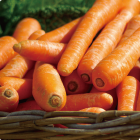
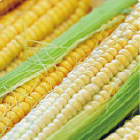
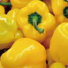

Vegetables

Carrots are crunchy, sweet root vegetables packed with beta-carotene, fiber, and Vitamin A. Best known for supporting eye health and immunity, they come in bright orange, purple, and yellow varieties. Versatile and low in calories, they are delicious consumed raw as a crisp snack or cooked in soups, roasts, and salads.

Corn (maize) is a sweet and versatile cereal grain rich in carbohydrates, dietary fiber, and essential B vitamins. Packed with eye-healthy antioxidants like lutein, it provides a steady source of energy. Enjoyed worldwide, corn can be eaten fresh on the cob, popped into popcorn, roasted, or cooked into soups and salads.

Bell peppers (sweet peppers) are vibrant, crunchy vegetables packed with Vitamin C, dietary fiber, and antioxidants. Available in bright red, yellow, orange, and green, they boost immunity and promote skin health. Low in calories, they are delicious eaten raw in salads, stir-fried, or roasted.